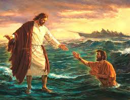

 22 En seguida Jesus hizo a sus discipulos entrar en la barca e ir delante de el a la otra ribera, entre tanto que el despedia a la multitud.
23 Despedida la multitud, subio al monte a orar aparte; y cuando llego la noche, estaba alli solo.
24 Y ya la barca estaba en medio del mar, azotada por las olas; porque el viento era contrario.
25 Mas a la cuarta vigilia de la noche, Jesus vino a ellos andando sobre el mar.
26 Y los discipulos, viendole andar sobre el mar, se turbaron, diciendo: ¡Un fantasma! Y dieron voces de miedo.
27 Pero en seguida Jesus les hablo, diciendo: ¡Tened animo; yo soy, no temais!
23 Y entrando el en la barca, sus discipulos le siguieron.
24 Y he aqui que se levanto en el mar una tempestad tan grande que las olas cubrian la barca; pero el dormia.
25 Y vinieron sus discipulos y le despertaron, diciendo: ¡Señor, salvanos, que perecemos!
26 El les dijo: ¿Por que temeis, hombres de poca fe? Entonces, levantandose, reprendio a los vientos y al mar; y se hizo grande bonanza.
27 Y los hombres se maravillaron, diciendo: ¿Que hombre es este, que aun los vientos y el mar le obedecen?